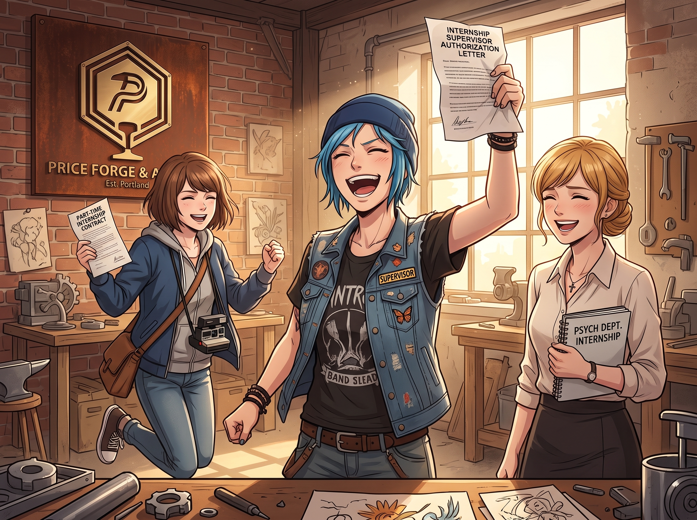

法人代表的短命特權

暑期開學前，Max 和 Kate 分別以攝影系與心理學系的實習學分名義，正式進駐了「Price Forge & Atelier」——工坊按規定簽了兼職實習合約，由 Chloe 掛名現場督導，負責填寫每週的實習評估表。
拿到這份《實習督導授權書》那天，Chloe 簡直尾巴翹上了天。
一、短暫的作威作福
Chloe 翹著二郎腿坐在那張巨大的橡木工作台前，手裡轉著扳手，對著剛進門打卡的 Max 咳嗽兩聲：「咳咳！實習生 Caulfield，根據實習條例第三條，現場督導現在急需一杯冰鎮櫻桃可樂和一包薄荷糖，限時三分鐘送達，否則扣除『團隊服從性』評分！」
在 Max 的每日工作日誌上，她拿起紅筆刷刷寫下評語：「該實習生今日偷拍法人工作英姿共計 34 次，且未主動提供擁抱作為補償，記小過一次。」
接著，她又指派 Kate 頂著太陽去給鐵軌外整整五十株向日葵「逐一進行心理疏導」，還煞有其事地聲稱這是「拓展實習生耐壓極限」。
二、三人反擊聯盟
面對 Chloe 的囂張氣焰，三人迅速啟動了各自分工明確的「制裁機制」。
Victoria 穿著剪裁俐落的西裝背心，端著手沖黑咖啡從隔壁辦公區走出來，手裡輕輕敲著厚厚的股東合約：「Price 法人，提醒妳，本工坊的法人代表津貼、改裝零件採購額度以及老皮卡的汽油報銷，全都取決於我每週五在支出單上的簽字。如果妳再敢拿實習評分威脅我的攝影檔案員，我就以大股東兼董事會唯一成員的身份，將妳降職為『鐵道雜草手動拔除專員』。」
Chloe 瞬間氣勢弱了一半，默默把搶過來的櫻桃可樂推回給 Max。
下午茶時間，Kate 烤好了香氣撲鼻的焦糖海鹽肉桂卷。Max 盤子裡有兩個，Victoria 有一塊特製的低糖無麩質塔，而 Chloe 面前只有一根乾巴巴的純燕麥棒。
當 Chloe 淚眼汪汪伸手去抓肉桂卷時，Kate 溫柔地把盤子移開，眉眼彎彎地輕聲說道：「Chloe 督導剛才不是說，工坊要維持嚴格的軍事化紀律嗎？那身為最高長官，肯定要以身作則少吃甜食、多鍛鍊心智對不對？」
Chloe 趴在桌上發出痛苦的哀嚎，當場宣布撤回對 Kate 的所有惡作劇要求。
作為掌握整個工坊視覺檔案的暗房掌控者，Max 推了推黑框眼鏡，拿出了終極殺手鐧——她默默從暗房裡洗出一整版 8x10 吋高清照片，包括 Chloe 昨天因為算不出材料力學公式把頭卡在工作台抽屜裡的滑稽特寫、被落枕的 Victoria 追打時踩到機油差點滑進地溝的抓拍，以及偷吃 Kate 的藍莓被抓包時鼓著腮幫子的蠢樣。
「Chloe，下週攝影系指導教授要來工坊做實地考察。妳猜——如果我把這些照片作為『企業文化與主管日常實務』放進匯報 PPT 的第一頁，教授會給這間工坊打幾分？」
Chloe 撲過去想搶底片，卻被 Max 靈巧地閃開，最後只能舉雙手投降。
三、教授考察日
到了學期末，學院指導教授親自來到舊火車車廂工坊進行最終審查。
當教授推開推拉門時，看到的場景是：實習生 Max 坐在主位上，從容優雅地展示著整套裝訂精美的《物質記憶修復影像集》；實習生 Kate 端著精緻的花草茶，給教授分發孩子們在鐵道花園療癒項目的滿意度數據報告；投資人 Victoria 在一旁用行雲流水的商業術語總結本季度的實習成果；而我們的「法人兼實習督導」Chloe，身上套著整潔的圍裙，被三人嚴格勒令安靜坐在最邊緣的小板凳上，乖乖給教授端茶倒水、切水果，連一句髒話都不敢冒出來。
在教授滿意地在合格證書上簽字、轉身離開車廂的下一秒——
Chloe 猛地扯下圍裙，一把抓起沙發上的羊毛靠墊砸向 Max，笑罵著在木地板上打滾：「Maxine Caulfield！妳們三個合起夥來造反！老娘這個法人代表今天非要扣光妳們所有人的實習學分不可——！！」
隨即被笑著撲上去的 Max、拿著軟枕加入戰局的 Kate，以及抱著雙臂優雅用腳尖把抱枕踢過去的 Victoria，再一次死死按在了長沙發上。